The Comparison of Means Tool will perform two standard inference procedures for the population means of the two independent populations from which the given two variable data set has been drawn.
The first procedure is to construct a confidence interval for the difference of population means from the sample means and standard deviations of the given two variable data set. If the sample sizes are over 30 a large sample procedure will be used and for a sample sizes under 30 a small sample procedure will be employed. In the latter case theoretically the parent populations must be normal so it is best to check for normality and/or symmetry of the data in the case of a small sample.
The second procedure is to evaluate a hypothesis test for the difference of the population means testing a user supplied null hypothesis ( given in the form of a target difference) against a user supplied alternative hypothesis. A null hypothesis of zero would test whether the population means differ. The P-value of the given data will be computed and the output box will indicate whether the results are significant relative to a user supplied level of significance. As with the confidence interval procedure if the sample sizes are over 30 a large sample procedure will be used and for a sample sizes under 30 a small sample procedure will be employed.
Suppose 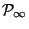,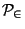 are the two independent populations represented by the two-variable data set and suppose 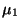 is the mean of and 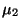 is the mean of . We wish to estimate 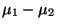. Let
If the sample sizes 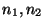 are large ( both over 30 in practice) then the statistic
EXAMPLE Suppose in our two variable data set we have the information
If the sample sizes are small we must assume that the parent populations are normal or approximately normal. If this is the case and the variances are approximately equal then the statistic
From this the following small
sample confidence interval  % for the difference of means can be derived
% for the difference of means can be derived
EXAMPLE Suppose in our two variable data set we have the information
For more information on general estimation theory click here
In a comparison of means test or two sample test of means we are testing a null hypothesis of the form
If large samples are drawn, then the appropriate test statistic for testing a null hypothesis of the form 1 is
If large samples are not drawn, that is either sample size is under 30, then we must assume that both parent populations are normal. We also assume that both populations have the same variance. Then the appropriate test statistic for testing a null hypothesis of the form 1 is
The distribution of the test statistic given in 3 is a t-distribution with 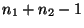 degrees of freedom.
We illustrate these tests with some examples.
EXAMPLE
It is desired to test whether average per patient cost for a given surgical procedure is the same in two different hospitals A and B. Costs of course will vary from patient to patient. A random sample of 60 procedures was drawn from hospital records from hospital A and 80 such records in hospital B. The sample mean in hospital A was $2675 with a standard deviation of $630 while the sample mean in hospital B was $2480 with a standard deviation of $850. Is this evidence at a 5% level that the mean costs in the two hospitals differ.
If we let be the average per patient cost in hospital A and be the average per patient cost in hospital B then the parameter being testing is the difference of the two means. The appropriate null hypothesis is then 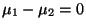 a difference of 0 indicating no difference between the two hospitals. Since there is no obvious preferred direction the alternative here is 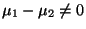. This is then a two-sided alternative and we will use a two-tailed test.
Here then we have
The rejection region based on the normal distribution is pictured in figure 1.
3.49truein by 1.83truein (Reject5 scaled 850)
The critical z-values here are 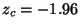 and 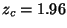. There are two critical values because both tails are significant.
The sample results are:
The results would be reported in the following manner.
At a 5% level the results were not significant. Therefore we would conclude that there is no
statistical difference between the average per patient costs for this procedure between the two
hospitals.
EXAMPLE
A cereal company A wants to compare its grams of fat per serving to a competitor B, claiming that the average grams per serving is less in A. From each company 9 servings were sampled and analyzed for fat content. The sample mean for company A was 1.8 grams with a standard deviation of .43 grmas while the sample mean for company B was 2.3 grams with a standard deviation of .38 grams. Is this evidence at a 5% level that the average per serving fat content is lower for company A.
If we let be the average fat content per serving for A and be the average fat content per serving for B then the parameter being testing is the difference of the two means. The appropriate null hypothesis is then a difference of 0 indicating no difference between the two hospitals. The alternative here is 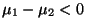, indicating that the fat content is lower for company A. This is a one-sided alternative and we will use a one-tailed test.
Here then we have
The distribution of this test statistic given is a t-distribution with degrees of freedom, so here 9+9-2 = 16 degrees of freedom. This is vased on the assumption that both parent distributions are normal and they have a common overall variance.
The rejection region based on the t-distribution with 16 d.f. is pictured in figure 2
3.64truein by 1.78truein (Reject6 scaled 850)
The critical t-value is .
The sample results are:
The results would be reported in the following manner.
At a 5% level the results were significant. Therefore we would conclude that the average fat
content per serving is lower for company A than company B.
We finish by mentioning two additional types of comparison of means testing. Suppose we have two independent samples from normal populations but with different variances. Then the test statistic given in 2 is not valid. In this case the following can be used as a test statistic
The final case is called a paired comparison test and handles situations which often arise in nursing and medical research. Suppose we take two sets of measurements on the same patients, such as before and after, and wish to determine if the means differ. The two sample means tests described earlier in this section are no longer valid since the populations are not independent. The procedure in this case then is to consider, for each patient, the difference before and after, and then do a one sample means test on the differences.
Formally call the populations before and after. The parameter of interest is then
the mean of the differences between before and after. Let
be a sample from the before
population and
the after values for the same individuals. That is  is the after
value for the before value for each
. We then consider the sample of differences
where
. Hyptheses of the form
are handled by
doing a one sample means test on this collection of differences.
is the after
value for the before value for each
. We then consider the sample of differences
where
. Hyptheses of the form
are handled by
doing a one sample means test on this collection of differences.
EXAMPLE A study was conducted on 10 patients to determine the effectiveness of a weight reduction program. The before and after weights are listed below. Was the program effective at a 5% level?
 Before Weights
Before Weights
 After Weights
After Weights
210 197
175 165
169 173
212 205
180 178
190 190
158 155
170 157
183 182
183 185
The weight program will be effective if the average before and after difference is negative. Therefore the null and alternative hypotheses to test whether the weight reduction program is effective are
The sample of differences is